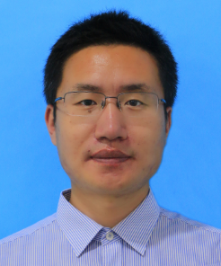

Likun Xue, Ph.D.
Principal Investigator · Professor and Vice Dean
Environment Research Institute, Shandong University
- xuelikun@sdu.edu.cn
- Office phone
- +86 532 5863 1962

Biography
Likun Xue is a professor and doctoral supervisor at Shandong University. His research in atmospheric chemistry focuses on highly reactive gases and their environmental effects, ocean–atmosphere chemical interactions, and the formation and mitigation of ozone pollution.
His university profile reports 96 papers as first or corresponding author, more than 13,000 citations, and an h-index of 63. His work has appeared in Science Advances, Nature Communications, National Science Review, Science Bulletin, Environmental Science & Technology, Atmospheric Chemistry and Physics, and Journal of Geophysical Research. He has received three provincial- or ministerial-level awards.
He serves as an associate editor of ACS ES&T Air, a member of the International Global Atmospheric Chemistry (IGAC) China Working Group, and an editorial board member of Atmospheric and Oceanic Science Letters. He has taught six undergraduate and graduate courses, led six teaching reform projects, and supervised more than 50 graduate students and postdoctoral researchers.
Education and Appointments
- 2002–2006
- Bachelor’s degree in Environmental Engineering, School of Environmental Science and Engineering, Shandong University
- 2006–2011
- Ph.D. in Environmental Science, Environment Research Institute, Shandong University
- 2007–2008
- Research Assistant, Department of Civil and Environmental Engineering, The Hong Kong Polytechnic University
- 2009–2011
- Research Assistant, Department of Civil and Environmental Engineering, The Hong Kong Polytechnic University
- 2012–2015
- Postdoctoral Fellow, Department of Civil and Environmental Engineering, The Hong Kong Polytechnic University
- 2015–present
- Professor and Doctoral Supervisor, Environment Research Institute, Shandong University
- 2016–2018
- Deputy Director (secondment), Jinan Environmental Monitoring Center
Awards and Honors
- 2025
- Distinguished Expert, Taishan Scholar Program
- 2025
- Second Prize, Shandong Provincial Natural Science Award (first-ranked recipient)
- 2023
- Second Prize, Ministry of Education Natural Science Award (second-ranked recipient)
- 2022
- Second Prize, Environmental Protection Science and Technology Award (first-ranked recipient)
- 2025
- Second Prize, Shandong University Award for Excellence in Graduate Education (first-ranked recipient)
- 2024
- Second Prize, Shandong University Award for Excellence in Graduate Education (first-ranked recipient)
- 2021
- National Outstanding Young Professional in Ecology and Environmental Protection
- 2023–present
- Listed among the world’s top 2% of scientists
Selected Publications
-
Critical transition of urban ozone formation regime in the North China Plain
National Science Review, 13(3), nwaf596, 2026.
-
HONO emission from marine algae
Science Advances, 12(19), eaeb8486, 2026.
-
Isotopic constraints on the origin of reactive chlorine in the troposphere
Science Advances, 12(3), eaeb5397, 2026.
-
Aligning climate and air quality goals demands early VOC control for China’s ozone pollution
Nature Communications, 17(1), 9307, 2026.
-
Improved global daily nitrogen dioxide concentrations from 2005 to 2023 derived using a deep learning approach
Earth System Science Data, 18(5), 2999–3011, 2026.
-
Atmospheric Nitrous Acid in Contrasting Environments in North China
Environmental Science & Technology, 60(14), 10961–10969, 2026.
-
Explainable Machine Learning for High-Resolution Modeling of Long-Term Atmospheric Nitrogen and Sulfur Wet Deposition across the United States
Environmental Science & Technology, 60(11), 8661–8670, 2026.
-
Multiphase reactions of organic peroxides and nitrite as a source of atmospheric organic nitrates
Nature Communications, 16(1), 5437, 2025.
-
Aerosol iodide accelerates reactive nitrogen cycling in the marine atmosphere
Nature Communications, 16(1), 8148, 2025.
-
Underestimated Formaldehyde Emissions from Residential Coal Combustion in Rural China
Environmental Science & Technology, 59(50), 27508–27516, 2025.
-
Long-Term Changes in Summertime Nitrate Chemistry in the Top Boundary Layer of North China
Environmental Science & Technology, 59(25), 12822–12832, 2025.
-
Reactive Oxidized Nitrogen at a High Mountain Site in the North China Plain: Chemical Speciation and Temporal Variations During 2007–2023
Journal of Geophysical Research: Atmospheres, 130(7), e2024JD042479, 2025.
-
Marine sources of formaldehyde in the coastal atmosphere
Science Bulletin, 70(1), 96–103, 2025.
-
Carbonyl Compounds Regulate Atmospheric Oxidation Capacity and Particulate Sulfur Chemistry in the Coastal Atmosphere
Environmental Science & Technology, 58(39), 17334–17343, 2024.
-
Heatwave exacerbates air pollution in China through intertwined climate-energy-environment interactions
Science Bulletin, 69(17), 2765–2775, 2024.